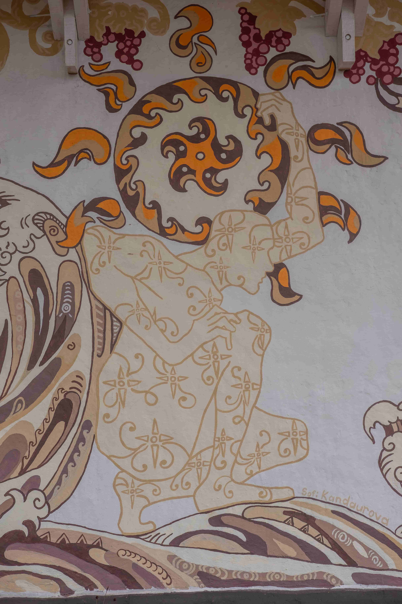

Tripillia style works
Projects
Lykhachiv school
-
The war poses many challenges to Ukrainian communities, not the least of which is the destruction of homes, hospitals, and schools. However, communities are not giving up and are already setting up their recovery. For example, in the Mrynska community in the Chernihiv region, a lyceum that was once built according to the ancient technology of wattle and daub huts is being restored. rubryka explores how this happens and what

-

The war poses many challenges to Ukrainian communities, not the least of which is the destruction of homes, hospitals, and schools. However, communities are not giving up and are already setting up their recovery. For example, in the Mrynska community in the Chernihiv region, a lyceum that was once built according to the ancient technology of wattle and daub huts is being restored. rubryka explores how this happens and what
-
The war poses many challenges to Ukrainian communities, not the least of which is the destruction of homes, hospitals, and schools. However, communities are not giving up and are already setting up their recovery. For example, in the Mrynska community in the Chernihiv region, a lyceum that was once built according to the ancient technology of wattle and daub huts is being restored. rubryka explores how this happens and what
-
The war poses many challenges to Ukrainian communities, not the least of which is the destruction of homes, hospitals, and schools. However, communities are not giving up and are already setting up their recovery. For example, in the Mrynska community in the Chernihiv region, a lyceum that was once built according to the ancient technology of wattle and daub huts is being restored. rubryka explores how this happens and what


Painting on weapons
Javelin for auction
The school's director, Svitlana Grosh, joined the reconstruction of her native school. Thanks to her, the Lykhachiv lyceum was included in the list of schools being restored as part of the U-LEAD
